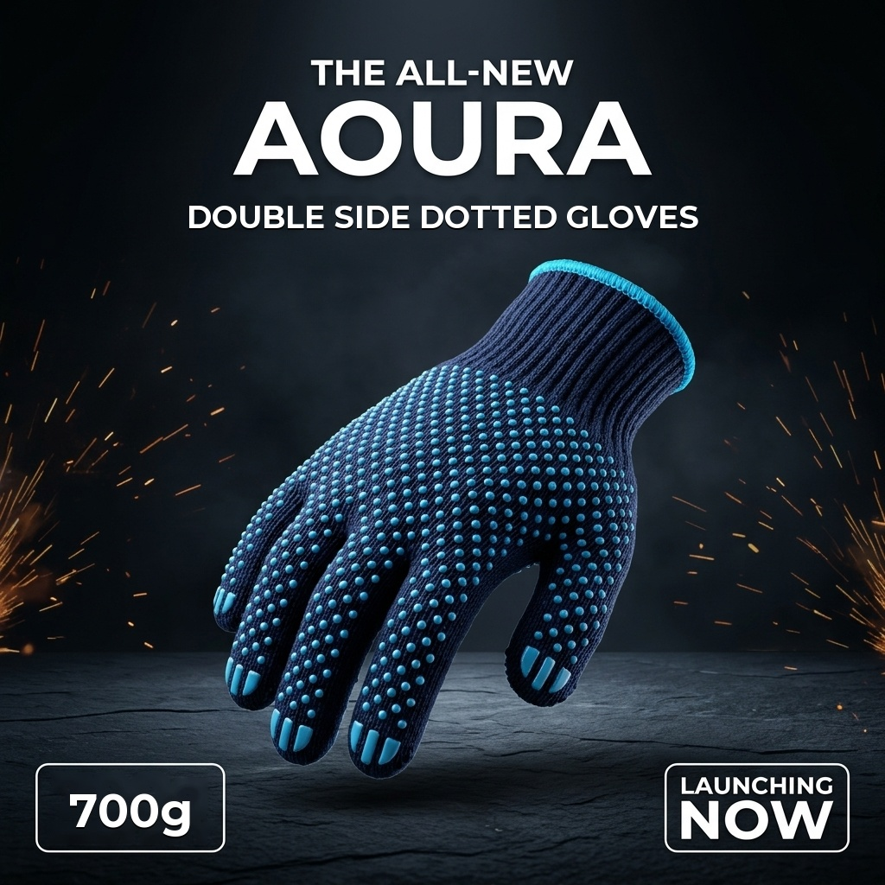
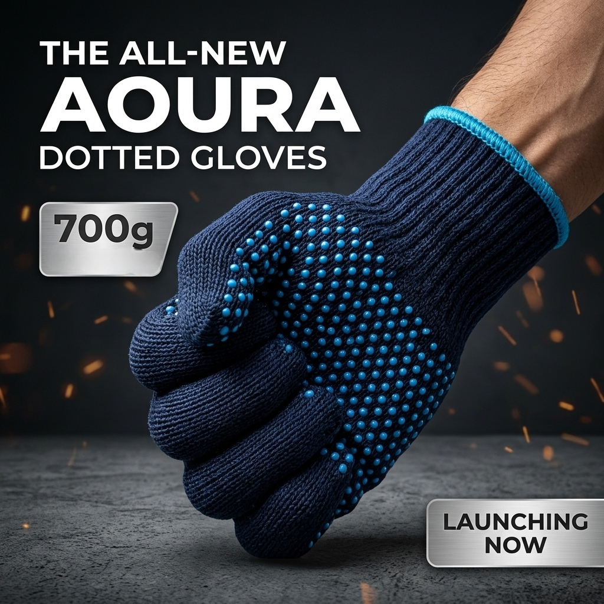

Overview & Product Significance
DUBAI, United Arab Emirates — October 30, 2026 — Aoura Products, the industrial distribution division of Aoura Group, today officially announced the commercial release of its proprietary Aoura Double-Sided Dotted Safety Gloves (700g Series). Designed specifically to meet the rigorous handling demands of high-throughput warehouses, regional logistics hubs, and industrial assembly facilities across the Gulf Cooperation Council (GCC), this launch reinforces Aoura’s commitment to providing premium, cost-effective PPE consumables directly to commercial enterprises.
Traditional single-sided dotted gloves suffer from rapid wear-down on high-friction points, forcing operators to discard gloves prematurely once palm dots degrade. The Aoura 700g series addresses this inefficiency through an ambidextrous, double-sided micro-dot pattern that effectively doubles the operational lifespan of every pair while guaranteeing maximum tactile dexterity.

Double-Sided PVC Grip Technology
The standout innovation of the new Aoura gloves lies in their proprietary high-adhesion Polyvinyl Chloride (PVC) micro-dot matrix applied to both the front palm and reverse hand faces:
- Ambidextrous Longevity: Wearers can switch hands or reverse glove orientation as wear develops, reducing per-worker glove consumption by up to 45% in active packaging lines.
- Enhanced Slip Resistance: The vulcanized light blue dots provide optimal friction coefficients against dry cardboard, smooth wooden pallets, corrugated containers, and finished metal panels.
- Tactile Feedback: Unlike bulky dipped nitrile or heavy leather alternatives, the raised dot array retains tactile sensitivity, allowing workers to handle barcodes, scanners, and small fastening components without removing protective gear.

700-Gram Heavy Density Fabric
Fabric density is the primary benchmark of durability in industrial cotton-polyester work gloves. While conventional budget gloves on the market average between 450 to 550 grams per dozen pairs, the Aoura series is precision-knitted to a robust 700 grams per dozen standard.
This high-yarn density provides essential puncture, abrasion, and tear resistance against rough timber, splintered pallets, and packaging strapping bands. Furthermore, the breathable seamless knit prevents heat accumulation inside the glove, making it suited for climate-controlled logistics hubs as well as non-conditioned warehouse operations across Dubai Industrial City, JAFZA, and Abu Dhabi.
Target Industry Applications in the UAE
Engineered for high-volume material handling, the Aoura Double-Sided Dotted Gloves serve key commercial sectors across the Emirates:
- E-Commerce Fulfillment Centers: Rapid pick-and-pack lines processing thousands of daily parcels where secure cardboard grip prevents drops.
- Freight & Cargo Handlers: Air freight and port consolidation hubs requiring all-day hand protection from abrasive container surfaces.
- Construction & Hardware Assembly: Dry handling of non-hazardous building materials, timber, piping, and scaffolding.
- Automotive & Maintenance Workshops: Parts staging, inventory sorting, and general utility maintenance.
Technical Specifications Summary
| Specification | Details |
|---|---|
| Product Line | Aoura Double-Sided Dotted Gloves |
| Base Fabric Material | Premium Cotton / Polyester Seamless Knit |
| Fabric Weight Rating | 700 Grams (per dozen benchmark) |
| Coating / Grip Pattern | Double-Sided Raised PVC Micro-Dots |
| Color Scheme | Midnight Navy Blue Knit with Electric Light Blue Dots |
| Cuff Style | Ribbed Elastic Knit with Cyan Overlock Hem |
| Packaging Options | 12 Pairs / Poly Pack | 240 Pairs / Master B2B Carton |
Commercial Supply & Procurement
The Aoura Double-Sided Dotted Gloves (700g) are in stock and available for immediate commercial fulfillment from Aoura’s centralized Dubai distribution network. Institutional buyers, warehouse operators, and industrial suppliers can request wholesale volume pricing, sample batches, and standing supply contracts directly through the Aoura B2B ordering portal.
Orders placed before 2:00 PM GST qualify for next-day dispatch anywhere within the UAE, backed by dedicated corporate account support from the Aoura Products team.